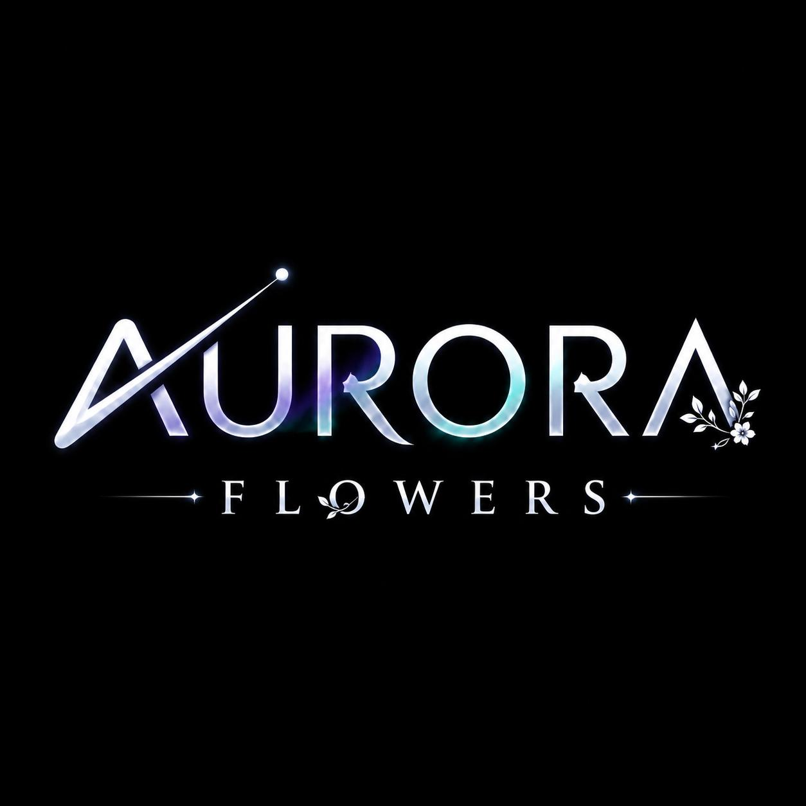

Um canal de conteúdos dedicado à motivação, à reflexão filosófica e à espiritualidade em língua portuguesa.
Promover a reflexão pessoal e o bem-estar emocional do público, através da partilha de conteúdos motivacionais, filosóficos e devocionais em língua portuguesa, contribuindo para a formação de uma comunidade consciente, inspirada e ligada a valores de sabedoria, fé e crescimento interior.
A atuação do Aurora Flowers assenta em valores de autenticidade, sabedoria, empatia e fé, procurando sempre oferecer ao seu público conteúdos de qualidade que aliem profundidade filosófica a uma linguagem acessível e emotiva.
José António
Diretor Geral